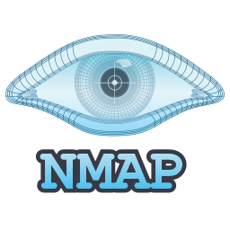

Épreuve E5 · Atelier 4
Étude critique du site SNCF Connect
En consultant junior, j’ai audité SNCF Connect sans aucune intrusion : ergonomie, performances, sécurité visible de l’extérieur et RGPD. Chaque constat repose sur une mesure et mène à une recommandation.
- Date
- 20/11/2026
- Outils
- Lighthouse
- Wappalyzer

Nmap- curl
 Chrome DevTools
Chrome DevTools
Résultats de l’audit
Performances et accessibilité
Lighthouse Ordinateur Mobile Performance 84 61 Accessibilité 96 100 Décalage de mise en page (CLS) 0,293 0 Temps de blocage total 50 ms 1 470 ms Site accessible, mais lourd sur mobile (20,4 s avant d’être utilisable) et instable au chargement sur ordinateur. Voir annexes 1 et 2
Sécurité vue de l’extérieur
Nmap ne voit que 4 ports web tenus par Cloudflare : aucun service d’administration exposé. En revanche, la CSP est minimale et il manque Referrer-Policy et Permissions-Policy. Voir annexes 3 et 4
Seuls des ports web derrière Cloudflare répondent Conformité RGPD
« Refuser tout » n’apparaît qu’au second niveau de la fenêtre de cookies, et des identifiants sont posés avant tout choix : un écart avec les règles de la CNIL.
Le second niveau, où « Refuser tout » apparaît enfin
Risques et recommandations
| Constat | Recommandation | Niveau |
|---|---|---|
| Refus de cookies moins visible que l’acceptation | « Refuser tout » dès le premier niveau | Élevé |
| Mobile : 20,4 s avant interactivité | Alléger le JavaScript, différer la publicité | Élevé |
| CLS de 0,293 sur ordinateur | Déclarer la taille des images | Moyen |
| CSP limitée, 30 cookies tiers | CSP stricte et en-têtes manquants | Moyen |
| Ports exposés : web uniquement | Aucune action | Faible |
Conclusion
Un site solide et peu exposé, dont les faiblesses viennent du mobile, des services tiers et du recueil du consentement. J’ai indiqué les limites de mes outils : le site bloque les requêtes automatiques et Nmap ne voit que Cloudflare.
Compétences mobilisées
1compétence sur 6 du bloc 1 du référentiel BTS SIO
- B1.3Développer la présence en ligne de l’organisationAnalyse de l’image et de la visibilité d’un site (ergonomie, accessibilité, SEO), au regard du cadre juridique (RGPD, règles de la CNIL)
Annexes
Les rapports bruts des outils permettent de vérifier chaque mesure.